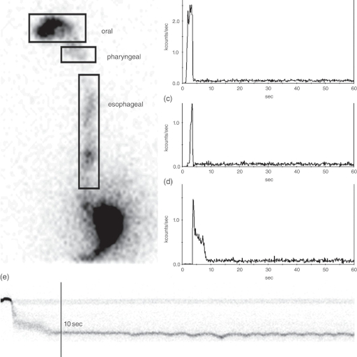
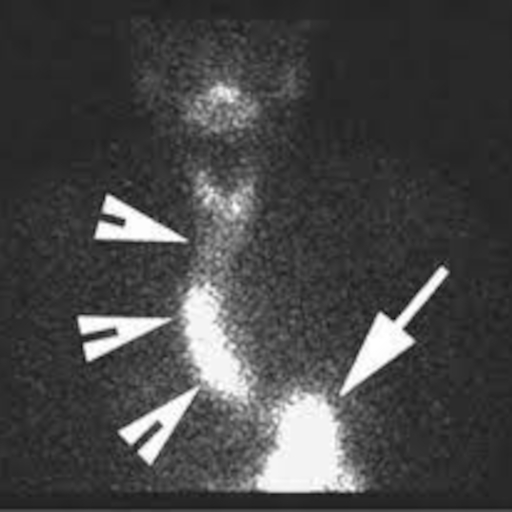

Nos da una visión de la eficacia del esófago para conducir el bolo alimenticio hasta el estómago y de sus posibles alteraciones.
Información detallada...
Mediante esta prueba podemos complementar la información ofrecida por otras técnicas diagnósticas como la phmetría, la manometría y la endoscopia, sobretodo cuando estas no son definitivamente concluyentes. Con frecuencia se realiza conjuntamente con la anterior.
Información detallada...